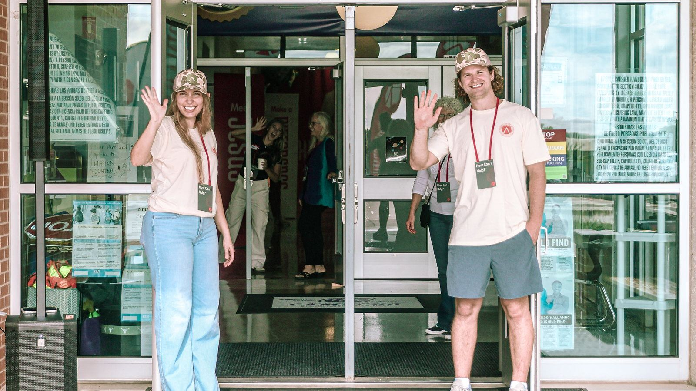
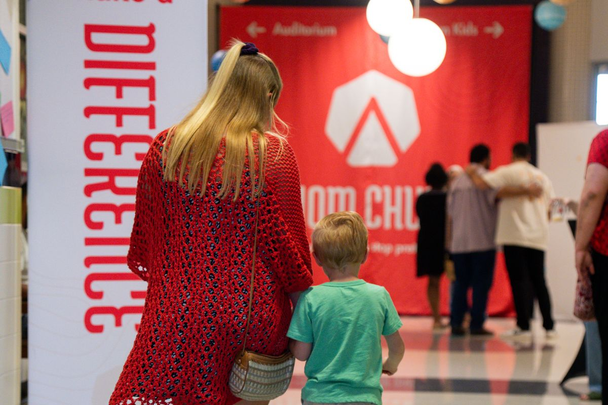

Plan a visit
What to expect.
Sunday's easier when we know you're coming. Someone meets you by name. Your kids are already registered.
Let us know you're coming
Thirty seconds. We won't add you to a list.
- Sundays at 10am
- Camacho Elementary, Leander
- Kids birth through 5th grade

- 1Someone's in the lot.They'll point you to guest parking.
- 2Find the New Here tent.Out front, before the doors.
- 3Someone walks you in.Coffee, kids, a seat. Done.
- From Cedar Park. North on US 183 or the 183A Toll. About 15 minutes.
- From Liberty Hill. East on SH 29, then south on US 183 into Leander. About 15 minutes.
- From Georgetown. West on SH 29, then south on US 183. About 25 minutes.
- From Round Rock. West on RM 620 or RM 1431, then north on 183A. About 25 minutes.
- From North Austin. North on US 183 or MoPac to the 183A Toll. About 25 minutes.
- Put 501 Municipal Dr, Leander in your maps app. We meet at Camacho Elementary.
- Matching tags. Only you can pick them up.
- Every volunteer is background checked.
- Let us know their names and ages and you skip the check-in line.
What kind of church is this?
Non-denominational. Casual. We teach from the Bible every week, but we’re not afraid of your questions.
Is it far from Cedar Park or Round Rock?
Not really. Most people drive in from Leander, Cedar Park, Liberty Hill, Round Rock, Georgetown and North Austin. Cedar Park and Liberty Hill are about 15 minutes. Round Rock, Georgetown and North Austin are about 25.
What is the time commitment?
About 65 minutes. A few songs, a Bible teaching you can use on Tuesday.
What should I wear?
Wear what you would wear on Saturday. No dress code. Just please wear something.
Can I just sit in the back?
Yes. Nobody gets asked to stand up, raise a hand, or introduce themselves.
What if church hurt me?
If church hurt you, we’re sorry. You don’t have to trust us yet. Sit in the back. Leave early. Come back if you want to.
I’m LGBTQ+. Am I welcome?
Everyone is welcome. This is a place you can belong before you believe the same things we do. Read what we believe.
Are you going to ask me for money?
No obligation to give as a guest. We're just glad you're here.
What happens after I fill out the form?
One email from a real person before Sunday. If you have kids, they'll be pre-registered. That's it.
What if Axiom isn’t for me?
That’s okay. We would rather you find a church than find ours. Here are a few nearby we’d happily send you to.
Watch Mari’s story
Her story mattered. So does yours.
Let us know you're coming.
Name, email, which Sunday. Thirty seconds.
Let us know you're comingOr just show up. That works too.